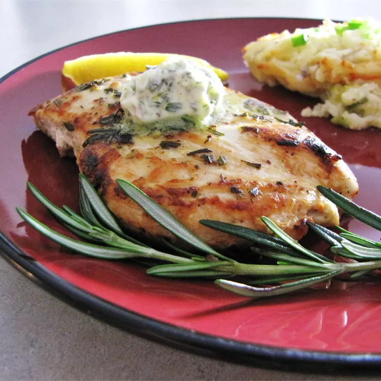

Rosemary Lemon Grilled Chicken

Description
This simple, sensational marinade and sauce for grilled chicken is made with lemon, garlic, rosemary, and butter. Separate the marinade into thirds: 1/3 for marinating, 1/3 for basting, and 1/3 for topping.
Ingredients
- ½ cup butter
- 3 cloves garlic
Steps
- In a food processor, blend butter, rosemary, garlic, lemon zest, and lemon juice together. Pour 1/3 of the blended mixture into a small bowl for marinade. Cover remaining mixture, and set aside.
- Lightly season chicken breasts with salt and pepper. Rub chicken breasts with marinade. Place chicken breasts on a platter, cover, and refrigerate for 3 hours.
Home